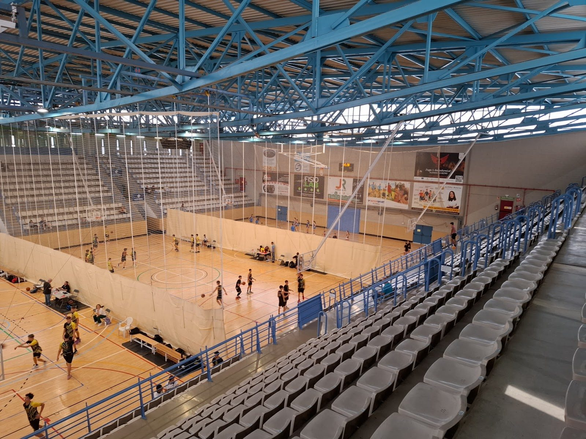

Ronda Ibèrica, 66 · Vilanova i la Geltrú
El pabellón donde juega media Vilanova
Instalación municipal cubierta para baloncesto, balonmano, fútbol sala y voleibol. Pistas para entrenamiento y partido, gradas y acceso adaptado. La sede de los equipos de la ciudad.
Instalaciones
Qué hay dentro del pabellón
Una pista central cubierta con gradas, pensada tanto para competición federada como para entrenamiento y actividad escolar.
- Pista central
- Cubierta y con gradas, para baloncesto, balonmano, fútbol sala y voleibol.
- Vestuarios
- Vestuarios y duchas para equipos y árbitros, con acceso desde la pista.
- Gradas
- Asientos para el público, con espacio reservado para sillas de ruedas.
- Acceso adaptado
- Entrada y aparcamiento accesible para personas con movilidad reducida.
- Zona de entrenamiento
- Espacio para calentamiento y entrenamiento fuera de la pista principal.
- Equipamientos deportivos
- Zona deportiva compartida con otras instalaciones municipales.
Deportes
Qué se puede jugar
El pabellón acoge las ligas locales y los entrenamientos de los clubes de la ciudad a lo largo de la temporada.
-
Baloncesto
Pista reglamentaria para partidos y entrenamientos de clubes y escuelas.
-
Balonmano
Una de las disciplinas habituales de la instalación.
-
Fútbol sala
Pista cubierta para ligas locales y partidos de entrenamiento.
-
Voleibol
Red y espacio suficiente para competición y entrenamiento.
-
Deporte escolar
Actividades y sesiones de educación física en horario lectivo.
-
Competición
Sede de partidos oficiales de los equipos de la ciudad.
Opiniones
Qué dice la gente
Extractos de opiniones publicadas en Google por usuarios de la instalación.
The best place to practice sports inside local teams of Vilanova. There are two spoor. Basquetball, handball, voleiball and soccer are the main sports.
One of the best sports-center in Garraf, and it can be one of the best ones in Catalonia.
Cómo llegar
Dónde está y cómo se entra
En la Ronda Ibèrica, 66, en la zona deportiva de Vilanova i la Geltrú. Llama antes si quieres confirmar disponibilidad de pista.
- Dirección
- Ronda Ibèrica, 66
08800 Vilanova i la Geltrú - Teléfono
- 938 14 34 50
- Plus Code
- 6PJJ+F3 Vilanova i la Geltrú, Spain
El mapa solo se carga si aceptas las cookies de terceros.